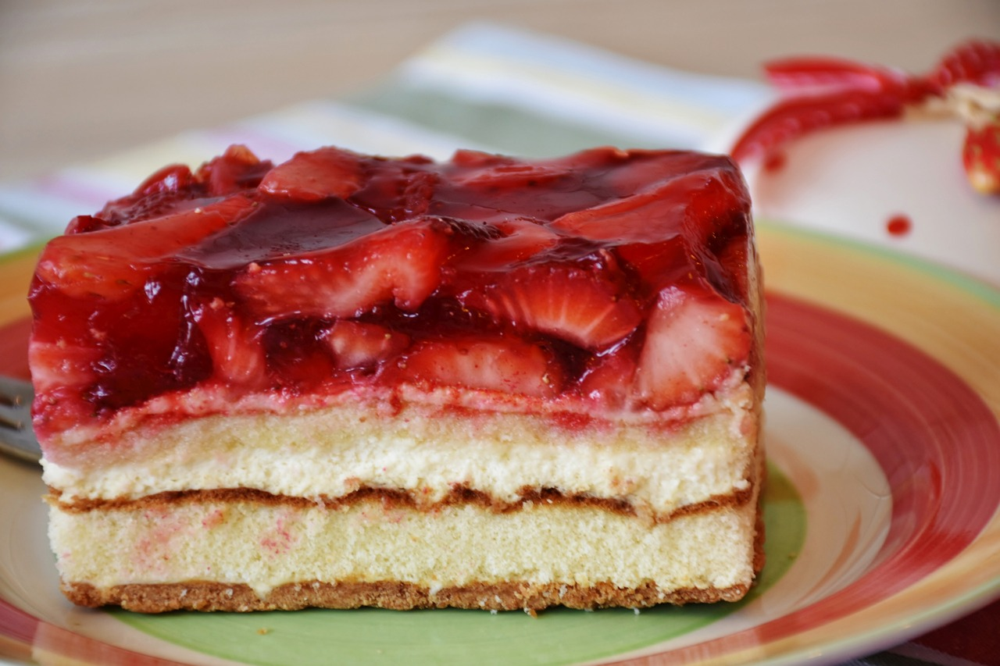
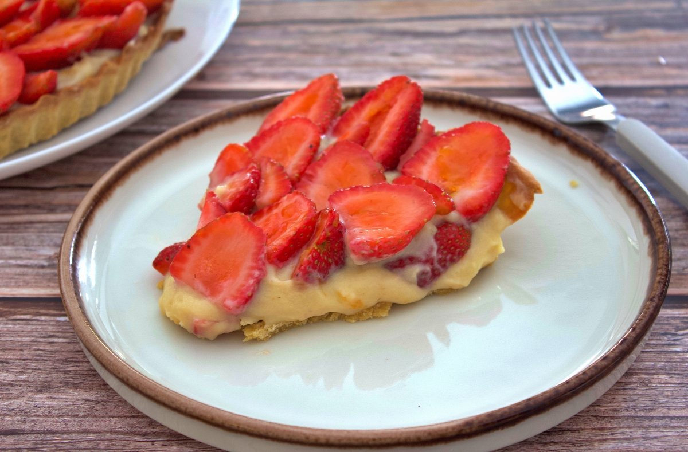

Tarta de fresas
Ingredientes para una tarta de fresas:
- -Masa para tarta (puede ser comprada o hecha con harina, mantequilla, azúcar, huevo y sal)
- -Fresas frescas
- -Azúcar
- -Gelatina de fresa (o similar)
- -Crema pastelera (opcional)
Modo de preparación resumido:
- -Extender la masa en un molde para tarta.
- -Cocinar o mezclar las fresas con azúcar y gelatina para hacer un relleno.
- -Verter la mezcla sobre la masa.
- -Refrigerar la tarta hasta que la gelatina cuaje.
- -Opcional: agregar capa de crema pastelera antes de las fresas.
- -Decorar con fresas frescas antes de servir.
- ¡Ahora tienes una deliciosa tarta de fresas! Ajusta la receta según tus preferencias y disfruta.